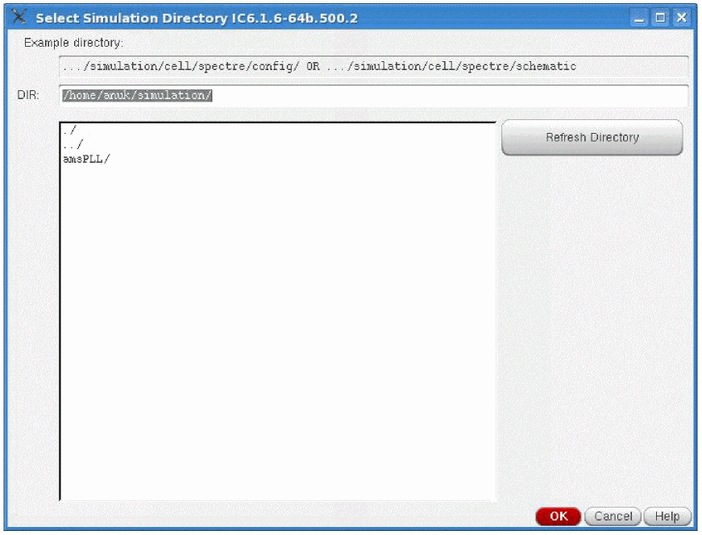
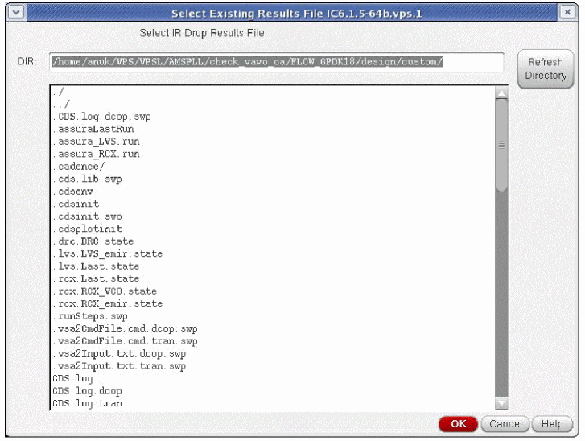

5
IR Drop Analysis
Overview
IR Drop is the voltage reduction that occurs on power supply networks (VDD) in integrated circuits.
Integrated-circuit design usually assumes the availability of an ideal power supply that can instantly deliver any amount of current to maintain the specified voltage throughout the chip. In reality, however, the combination of increasing current per-unit area on the die and narrowing metal line widths (which increases the power-grid resistance) causes localized voltage drops within the power grid, leading to decreased power supply voltage at transistors.
These localized drops in the power supply voltage decrease the operating voltage of the chip, potentially causing timing problems and functional failures.
IR Drop analysis involves analyzing the power grid to identify the IR Drop problems so that they can be corrected.
Package Effect in IR Drop Analysis
The image below depicts how voltage drop is calculated by the software and how package effect is incorporated in IR drop analysis to report accurate IR drop.
Figure 5-1 Calculating IR Drop
In Scenario1 shown in above image, the IR drop at node, 1:VDD, is calculated using the following equation:
In Scenario2, there is additional resistance due to package effect. However, by default, the software will calculate the IR drop at node, 1:VDD, using the following equation:
To incorporate package effect in the above calculation, you can specify the value of “V”. The software will then calculate the IR drop at node, 1:VDD, using the following equation:
To specify the voltages, open the IR (voltage) Drop Analysis form and click Update Voltages for Pins/Signals to update voltages for pins/signals appearing in the list box. The details are provided in the subsequent section.
IR Drop Analysis
Power IR/EM is used to create a “thermal map” representation of the IR Drop on selected pins and signals.
To perform IR Drop analysis from the Virtuoso layout window, follow these steps:
- In the Main menu, choose VPS-L. Two options, Analyze Extracted View Pin(s) and Analyze Extracted View Signal(s) appear in the drop-down list.
-
Choose Analyze Extracted View Pin(s) for analyzing the power pins of the design and Analyze Extracted View Signal(s) to analyze the signals of the design.
Figure 5-2 Opening IR Drop Analysis Form -
From the drop-down list, select IR Drop Analysis. The IR (Voltage) Drop Analysis form opens.
Figure 5-3 Running (Voltage) Drop Analysis
vsaIRLast.cfg file that is created for every session by default. However, if you do not want the software to load the settings of the previous session by default, set the -vsaDisableLastConfig environment variable to true.-
In the QRC extracted cellview, you can view the Extracted Library, Extracted Cell, and Extracted View name created during the extraction run. See Running Pegasus Quantus QRC in the “IR/EM Analysis Flow” chapter. The default view name for an extracted view is
av_extracted. - Click All pins to perform IR drop analysis on all pins. The default option is to perform IR drop analysis on all pins.
-
Click Select pins to select the pin names on which the IR Drop analysis should be performed. When Analyze Extracted View Signal(s) is selected, the form shows the above two fields as All signals and Select signals respectively. In this case, use Select signals to select the signal names on which the IR Drop analysis should be performed. Pin or signal names can be searched by typing the name of the pin or signal in the search field. The search field also accepts SKILL regular expressions.
-
Click Update Voltages for Pins to update voltages for pins appearing in the list box. When you click this button, the Update IR Pin Voltages form opens. This form is shown below.When Analyze Extracted View Signal(s) is selected, the IR (voltage) Drop Analysis form shows an Update Voltages for Signals button. Click this button to update voltages for signals.Figure 5-4 Updating Voltages for PinsThe above form shows a table with two columns, “Pin” and “Voltage”. Double-click the “Voltage” column to type the updated voltage for any pin. Click OK. The updated voltages appear in the list box in the IR (Voltage) Drop Analysis form. This is shown below.

- In the Calculate IR Drop cyclic field, choose at every segment to include all segments of the net in the IR Drop analysis.
- Choose the Simulation Directory to point to the results of the Spectre, UltraSim, or APS simulation that was performed on the extracted view.
-
You can also click Select Simulation directory to specify the simulation directory. The Select Simulation Directory form opens. This form is shown below.
Figure 5-5 Selecting the Simulation Directory-
In this form, choose the simulation directory and click OK.
For more information, see Running a Spectre Simulation, Running An UltraSim Simulation, or Running an APS Simulation in the “IR/EM Analysis Flow” chapter.
-
In this form, choose the simulation directory and click OK.
-
In the Analyze results cyclic field, choose either DCOP or TRANSIENT simulation.
- The DC operating point (DCOP) analysis is recommended for large analog designs that are difficult to simulate in Spectre using transient analysis, especially with all parasitics included.
- The TRANSIENT option sets the simulation time in seconds automatically when the from/to fields are selected. It also allows you to specify the following methods of processing results.
-
If your simulation data is in
vavo.dbformat, the vavo_db option appears in the form. This option is selected by default. To use the PSF database, deselect this option. This option is available only if you are usingvavo.db. You can also specify this option in the batch mode by using the _vsa_vavo_db_enable.For details of this command, see the “Batch Mode Execution” chapter. - In the Type of IR Drop cyclic field, choose the type of IR Drop analysis to be performed, Peak (default) or Average. In the results file that is generated, the “Results type” field will indicate whether the Type of IR Drop is Peak or Average. The IR Drop Results form shows the type of analysis being performed in the title bar.
- In Ignore Voltage Drop Less than, specify the minimum voltage for which you want to view IR drop results. The software will only show IR drop results for voltages greater than that specified in this field.
-
Click Save State to save the information filled out in the form. The Save IR Form State To A File form opens. This form is shown below.
Figure 5-6 Saving IR Form State to a File -
Click Load State to load previously saved information in the form. The Select Existing IR From State File form opens. This form is shown below.
Figure 5-7 Selecting an Existing IR State -
After completing the inputs in the IR Drop Analysis form, click OK or Apply. When you click OK or Apply in this form, the result file and the configuration file are stored in the following location by default:
working directory/VSA.OUT/CURRENT_DATE/
Example:
working_dir/VSA.OUT/MAY_5_1/IRDrop.results and IR.cfg
If multiple sessions are run on the same day, the name of theCURRENT_DATEfolder will be updated sequentially. This is shown below.
working_dir/VSA.OUT/MAY_5_2/IRDrop.results and IR.cfg
working_dir/VSA.OUT/MAY_5_3/IRDrop.results and IR.cfgIf you do not have permissions in the working directory, these files will be saved in your home directory.If you do not want to save the above files, set the _vsaDisableAutoArchive environment variable to“true”.
Analyzing IR Drop Across Design Resistors
By default, Power IR/EM performs IR Drop analysis across parasitic resistors as part of a single net entity and the net is considered to terminate at the pin of the first design device, which might be a resistor. Normally, the signal resumes on the other side of the resistor (the other pin) with a different net name, and is considered by Power IR/EM to be a different signal during IR Drop analysis.
However, in many designs, metal resistors are added to power lines and it is desirable to perform IR Drop analysis on the complete net, even though the signal might traverse both design and parasitic resistors. You can specify the design resistors to include in the IR drop analysis as shown below.
You can also exclude bulk terminals of the design resistors from the IR drop analysis by specifying the names of the terminals in the Advanced options for IR (voltage) Drop Analysis form. This is shown below.
To specify design resistors and to exclude their bulk terminals for IR drop analysis, follow these steps:
-
In the IR (Voltage) Drop Analysis form, click Advanced at the bottom of the form. The form shown below opens.
Figure 5-8 Specifying Advanced options for IR (Voltage) Drop Analysis Form - Click the Use design resistor / explicit resistor option to specify that IR Drop analysis should be performed across design resistors.
- In the Enter design resistor cell name field, type the cell names of the specific design resistors that are to be included in the IR Drop analysis. Multiple cells can be specified by placing a space between cell names.
- In the Exclude design resistor terminals (bulk) field, type the names of the bulk terminals to exclude from the IR drop analysis. Multiple terminals can be specified by placing a space between terminal names.
-
Click Load From File to specify the file with the cell names of the specific design resistors to be included in the IR drop analysis. The Select an Existing Design Resistor File form opens. This form is shown below.
Figure 5-9 Selecting an Existing Design Resistor File - In this form, choose the file and click OK.
Writing Out an IR Command File
To generate a batch mode command file, follow these steps:
- In the IR (Voltage) Drop Analysis form, select the Results Directory and pin name.
-
Click Generate Command File. The Save IR Commands To a File form opens. This form is shown below.
Figure 5-10 Saving IR Commands To a File -
In this form, specify the Command File Name. If the command file name is not specified, the software either uses
<Batch job Name>.cmdas the default command file name or if the batch job name is not provided, then it usesvsaIRBatch.cmdas the default command file name. - Specify the Batch Job Name, which is a unique job name to distinguish between different jobs. This allows you to run multiple command files – generated by different job names – in the same working directory.
-
Click View file to view the command file. This option is selected by default. If you do not want to view the command file, you can change the default selection of this option by setting the _vsaUncheckViewFile
true. - In the Run Options group box, click Run file to run the generated command file in the background.
-
Specify the Local Server Farm or the LSF Command String , which is the name of the wrapper string command that will launch Power IR/EM in the batch mode. For example, you can specify
bsub -q lnx64as the LSF command string. You can also specify the LSF string by using the environment variable, _vsaLSFMachineString. When this environment variable is set, the LSF Command String field is pre-filled with the specified command. - Click Load GIF Viewer to launch the vsaPlot, which is used for visualizing and customizing the IR drop and EM analysis results. For details, see the “Visualizing Results in vsaPlot” chapter.
- Click OK.
Opening Power IR/EM Directly from Extracted View
In the GUI mode, the extracted view can be opened directly, bypassing the need for a top-level schematic. When IR Drop analysis is started, and the testbench schematic is available, a form opens asking for the hierarchical name of the design. Provide the hierarchical name of the design and ensure that the hierarchical name is complete including the delimiter being used, if any. For example /X1 or /IO/I1.
The pin map information can be entered in the same form and is specified in the following format:
(extracted_pin_name1 testbench_pin_name1)(extracted_pin_name2 testbench_pin_name2) ...
This information is required to be added for any pins that have different names between the extracted view and testbench schematic view.
This form for specifying hierarchy and pin map information can also be evoked by clicking the Hierarchy PinMap Options on the IR (Voltage) Drop Analysis form or Electromigration Power Grid Analysis form depending upon the type of analysis you want to perform. This provides the option to change hierarchy or pin map information. This form is shown below.
IR Drop Results
You can view the results of the IR drop analysis by selecting the various options available in the IR (voltage) Drop Results form. You can either import the results of an IR drop analysis performed earlier or view results for the current IR drop analysis run by using this form. Both methods are detailed below.
Importing Results of a Previous Analysis
To import the results of an IR Drop analysis performed earlier, perform the following steps:
-
Select Analyze Extracted View Pin(s) or Analyze Extracted View Signal(s) – Import IR Drop Results.
Figure 5-12 Opening Import IR Drop Results Form -
The Select Existing Results File form opens.
Figure 5-13 Importing Existing IR Drop Results -
Select the file from the list and click OK. The IR (voltage) Drop Results form opens.
Figure 5-14 Opening IR (voltage) Drop Results Form when IR Drop Results are ImportedWhen existing results for IR drop analysis are imported, the IR (voltage) Drop Results form provides a Save Marking button instead of Save Results to A File button. This is shown in the above form.-
Click Save Marking to save the marked results in a file for future reference. The Save Marking Data form opens. The results can be reloaded in subsequent sessions. This is shown below.
Figure 5-15 Saving the Marking Data
-
Click Save Marking to save the marked results in a file for future reference. The Save Marking Data form opens. The results can be reloaded in subsequent sessions. This is shown below.
Selecting Options in the IR (voltage) Drop Results Form to View Results
The IR drop analysis results can be viewed using the various options provided in the IR (voltage) Drop Results form.
After performing IR drop analysis, when you click OK on the IR (voltage) Drop Analysis form, the IR (voltage) Drop Results form opens. This form is shown below.
Figure 5-16 Opening IR (voltage) Drop Results Form for the Current IR Drop Analysis Run
This form displays the IR drop information for the specified extracted view. In the form above, the extracted view selected is av_R. In this form, specify the following:
- In Layout Window Number, specify the window ID for the layout, if a layout is open for the design. Click Get Layout Window Number to enable the software to get the layout window number automatically from an already open window. If no layout window is open, a new window will be opened with a layout view.
-
In the drop-down list provided against the Select Pin/Signal field, select the pin or signal for which you want to view the results.
Figure 5-17 Selecting Pins/Signals from the Drop-down ListYou can also search for pin or signal names by typing the name in the search field and pressing the enter button – the button with the green arrow – or by using SKILL regular expressions. The pin or signal names can also be searched on the basis of IR drop by providing the IR drop limit with a comparison operator. For example, to view results for pins or signals with voltage drop greater than 15.00m, type>15in the search field. - In the table, filter out results for the selected pins or signals on the basis of the following:
-
Click Mark and Unmark for marking and unmarking nets. Select the nets and click Mark. A hash (#) symbol gets added in the beginning of the rows in which the IR drop analysis results of the nets are displayed. The result file displays the IR drop analysis results for all marked nets. Similarly, click Unmark to unmark a net. Nets showing false errors can be unmarked so they are not reported in the result file. This helps save time spent viewing and debugging all the false errors reported in the result file.
Figure 5-18 Marking Nets in the IR Drop Results Form -
Click Zoom To Net to enlarge the view of the currently selected net in the list box on the layout. This is shown below.
Figure 5-19 Zooming to Selected Net in the Layout -
Click Plot Nets to display the current waveform on the selected net in the Virtuoso (R) Visualization & Analysis XL window. This is shown below.
Figure 5-20 Viewing Current Waveforms on the Selected Nets in Virtuoso (R) Visualization & Analysis XL -
Click Save Results To A File to save the IR drop analysis results as a text file. The Save IR Drop Analysis To A File form opens. This form is shown below.
Figure 5-21 Saving IR Drop Analysis Results to a File- In this form, specify the Output File Name.
-
Click View file to view the result file. This option is selected by default. If you do not want to view the result file, you can change the default selection of this option by setting the _vsaUncheckViewFile
true. - Click OK.
Customizing Error Layer Display for IR Drop Results
Power IR/EM lets you customize IR drop result displays on the Virtuoso layout. For this, you can customize settings in the Plots form.
In this form, you can customize the violation voltage ranges using a continuos RGB gradient. The vast range of color options provided by the RGB gradient makes it easier to view a specific range of violations.
Click Plots in the IR (voltage) Drop Results form. The form shown below opens.
Figure 5-22 Displaying Highlight Color Spectrum and Options for Customizing Display of IR Drop Plots
In the Select Layers group box:
- Select the layers for which you want to view the violations. Click AV or NV to select or deselect all layers respectively. Click the layer names to select specific layers. When the Plots form opens, all layers are selected by default.
-
Two buttons, with up and down arrows, are provided next to the layers listed in the list box. You can change the order of layers by selecting any layer and then clicking the up or down arrow button to move the layer up or down in the list. The updated layer order is reflected in the plot highlights on the extracted view. The images below show the change in plot highlights on the extracted view when the order of Metal2 layer is changed.
Figure 5-23 Changing the Order of LayersFigure 5-24 Changing the Order of Layers -
The RGB color spectrum is provided for viewing violations in different colors.
Figure 5-25 Displaying Total Violation Range for All Layers on the Layout -
Min and Max sliders are provided for customizing the ruler range for viewing the violations that fall within the specified Min Max slider range. You can move the Min Max sliders up and down to update the ruler ranges according to the new slider positions.
When Min Max sliders are used to specify the ruler range for violations, the selection is updated in the Customize Range fields.
The violations above and below the slider marks are displayed in “deep red” and “deep blue” respectively. This is shown in the image below.
Figure 5-26 Customizing the Ruler Range for Viewing IR Drop Violations
- Click All Layers to specify the total violation range. When All Layers is selected, the total violation range remains constant irrespective of whether the layers are selected or deselected in the Select Layers group box.
-
Click Selected Layers to select the violation range for layers selected in the Select Layers group box. The range is updated both on the slider and in the Customize Range fields for the violations of the selected layers. The layout is highlighted accordingly.The software saves the last state for All Layers. When you switch back to All Layers after using Selected Layers, the Min Max slider values, the ruler range, and the values in the Customize Range fields are restored to those in the previously-saved state. The display on the layout is updated accordingly.
- Click Customize Range to enter the minimum and maximum values of the required range in the text fields and press enter. The specified range becomes the new ruler range.
- Click Reset to restore the ruler range to the default values. For All Layers, when you click Reset, the ruler range moves back to the total violation range. For Selected Layers, when you click Reset, the ruler range moves back to the total violation range for selected layers only.
-
Click Net Shapes to highlight the specified nets on the layout. For example, to highlight a net, select the net in the IR (voltage) Drop Results form and then click Net Shapes in the Plots form. The selected net is highlighted in the layout as seen in below images.
Figure 5-27 Selecting a Net in the IR (voltage) Drop Results FormFigure 5-28 Highlighting Net Shapes on the Layout -
Click Pin Shapes to highlight the specified pins on the layout. First, select the net in the IR (voltage) Drop Results form and then click Pin Shapes in the Plots form. The pin shape is highlighted in the layout as seen in below image.
Figure 5-29 Highlighting Selected Pin Shapes on the Layout -
Select or deselect Display DFII Layers to toggle the visibility of the DFII layers on the layout. This is shown in the image below.
Figure 5-30 Toggling Display of DFII Layers on the Layout -
Select and deselect Show Plots to toggle the highlights on the layout. This is shown in the image below.
Figure 5-31 Toggling Highlights on the Layout -
Click Show out of range values to show violations with values outside the specified ruler range. For example, in the image below, the Min slider is set at 0.004579. When you click Show out of range values, the layout shows violations below the specified minimum range in deep blue.
Figure 5-32 Showing Out of Range Values -
Click Get Value on Layout to retrieve the values from the extracted view. For this, first click Get Value on Layout in the Plots form and then click on the layout to select a point. The violations at that point are marked on the ruler with red arrows and are highlighted in the IR (voltage) Drop Results form. The range of violations is listed in the Customize Range fields. This is shown in the image below.
Figure 5-33 Retrieving Values from the Extracted View -
Click Zoom Select Max Violation to highlight the maximum violation in the selected area. For this, select an area on the layout to locate the maximum violation in that area. The maximum violation in the selected area is marked on the ruler with a red arrow and highlighted in the IR (voltage) Drop Results form, and the layout zooms to the maximum violation. This is shown in the image below.
Figure 5-34 Zooming into the Maximum Violation in the Selected Area - Click Default to restore the default settings.
- Click Close to exit.
Return to top